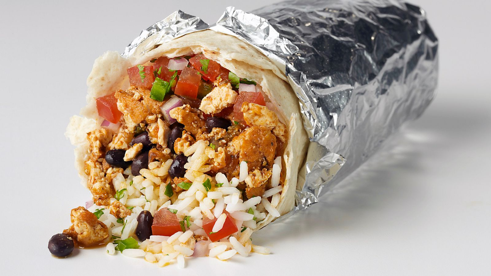

RECIPIES FOR KINGS
BURRITOS

Directions:Heat the oil in a medium pot over medium-high heat. Add 1/2 cup pico de gallo, the chopped chipotle and adobo sauce to taste; cook until the mixture starts to sizzle, about 2 minutes. Add the beans and 3/4 cup water; bring to a low boil, then stir in the chicken and cook until the mixture is slightly thickened, about 2 minutes. Stir in the cilantro and season with salt (cont...)
INGREDIENTS
- 1 tablespoon vegetable oil
- 3/4 cup pico de gallo or fresh salsa
- 1 chipotle chile in adobo sauce, chopped, plus 1 to 2 tablespoons sauce from the can
- One 14-ounce can pinto beans, drained and rinsed
- 1 1/2 cups shredded rotisserie chicken, skin removed
- 1/4 cup roughly chopped fresh cilantro
- Kosher salt
- 4 burrito-size flour tortillas
- 1 1/3 cups cooked white rice, warmed
- 1 1/3 cups shredded Monterey Jack cheese (about 5 ounces)
- 1 1/3 cups shredded romaine lettuce
- Guacamole, for serving (optional)